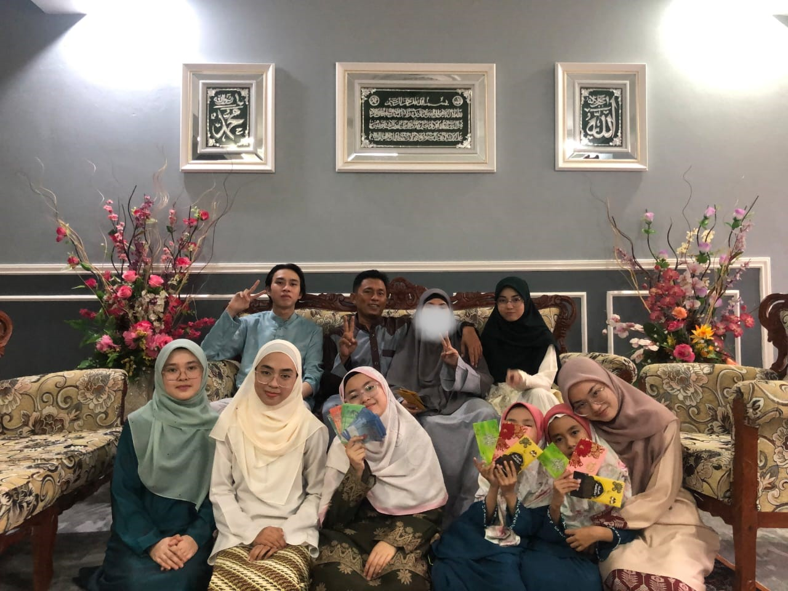

Family is the most important person in my life. Always put family first than anything. I am blessed to have a big family that lovable and happy. I have eight siblings and, I was the third child in the family. The photo below shows my big family:
|  |
From top left:
|
From bottom left:
|
In my family, we learned a lot about humanity. I would mention, I am very grateful for everything that happened and everything I have right now. It is because my current life is better and happier. I wish I could live with this big family for a longer time ahead.